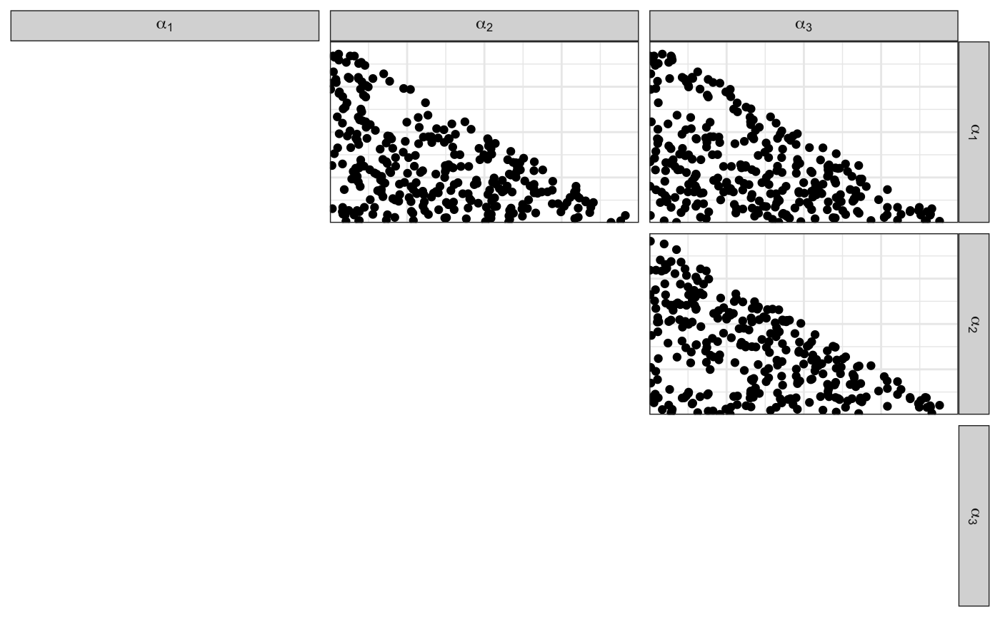

vignettes/dirichletdirichlet-study.Rmd
dirichletdirichlet-study.RmdA study is the set of parameters in a model, data generated from those parameters (population), and three sets of samples: the reference/questioned/background items.
This package implements the generation of selected studies.
This vignette describes the Dirichlet-Dirichlet model.
Consider Dirichlet samples \(X_i\) from \(m\) different sources. Each source is sampled \(n\) times:
We assume that \(\boldsymbol{\alpha}\) is known.
The population can be generated using fun_rdirichlet_population:
# Population parameters:
# Number of sources
n <- 10
# Number of items per source
m <- 20
# Number of observations per item
p <- 4
list_pop <- fun_rdirichlet_population(n, m, p)The output contains:
df_pop
df_sources and alpha
names_source
names_var
Notice that the hyperparameter is sampled, too (but it can be fixed).
head(list_pop$df_pop)
#> # A tibble: 6 x 5
#> source `x[1]` `x[2]` `x[3]` `x[4]`
#> <int> <dbl> <dbl> <dbl> <dbl>
#> 1 1 0.00000950 2.27e-265 1.10e- 1 0.890
#> 2 1 0.000268 7.87e- 3 1.26e-21 0.992
#> 3 1 0.0583 2.05e-121 5.19e- 2 0.890
#> 4 1 0.634 8.48e- 81 1.81e-16 0.366
#> 5 1 0.407 5.53e-111 1.73e-10 0.593
#> 6 1 0.213 6.81e- 33 7.11e-53 0.787
head(list_pop$df_sources)
#> # A tibble: 6 x 5
#> source `theta[1]` `theta[2]` `theta[3]` `theta[4]`
#> <int> <dbl> <dbl> <dbl> <dbl>
#> 1 1 0.199 3.31e- 3 2.31e- 2 0.774
#> 2 2 0.897 9.46e-18 2.48e- 8 0.103
#> 3 3 0.992 5.64e-13 7.92e- 3 0.000550
#> 4 4 0.995 7.48e-16 4.51e- 3 0.000228
#> 5 5 1.000 5.45e-15 1.80e- 4 0.000149
#> 6 6 0.717 3.57e- 3 3.82e-21 0.279We assume that the Dirichlet hyperparameter (the level farther from the data) comes from the Uniform distribution on the (p-1)-Simplex.
In other words, we will sample the Dirichlet hyperparameter from the \(\text{Dirichlet}{(\boldsymbol{1})}\) distribution.
The shortcut function the package is fun_rdirichlet_hyperparameter:

Once the population is generated, the reference/questioned/background samples must be extracted.
This is generically done using make_dataset_splits:
k_ref <- 10
k_quest <- 5
list_samples <- make_dataset_splits(list_pop$df_pop, k_ref, k_quest)
names(list_samples)
#> [1] "idx_reference" "idx_questioned" "idx_background" "df_reference"
#> [5] "df_questioned" "df_background"head(list_samples$df_reference)
#> # A tibble: 6 x 5
#> source `x[1]` `x[2]` `x[3]` `x[4]`
#> <int> <dbl> <dbl> <dbl> <dbl>
#> 1 15 1 0 0 0
#> 2 15 1 0 0 0
#> 3 15 1 0 0 0
#> 4 15 1 0 0 0
#> 5 15 1 0 0 0
#> 6 15 1 0 0 0
head(list_samples$df_questioned)
#> # A tibble: 5 x 5
#> source `x[1]` `x[2]` `x[3]` `x[4]`
#> <int> <dbl> <dbl> <dbl> <dbl>
#> 1 1 0.0583 2.05e-121 5.19e- 2 0.890
#> 2 1 0.000194 1.47e-107 1.43e-38 1.000
#> 3 2 0.487 0. 0. 0.513
#> 4 11 0.00000000972 0. 1.33e- 3 0.999
#> 5 12 0.618 3.30e- 1 0. 0.0522
head(list_samples$df_background)
#> # A tibble: 6 x 5
#> source `x[1]` `x[2]` `x[3]` `x[4]`
#> <int> <dbl> <dbl> <dbl> <dbl>
#> 1 1 0.00000950 2.27e-265 1.10e- 1 0.890
#> 2 1 0.000268 7.87e- 3 1.26e-21 0.992
#> 3 1 0.634 8.48e- 81 1.81e-16 0.366
#> 4 1 0.407 5.53e-111 1.73e-10 0.593
#> 5 1 0.213 6.81e- 33 7.11e-53 0.787
#> 6 1 0.546 9.93e-165 5.89e-28 0.454